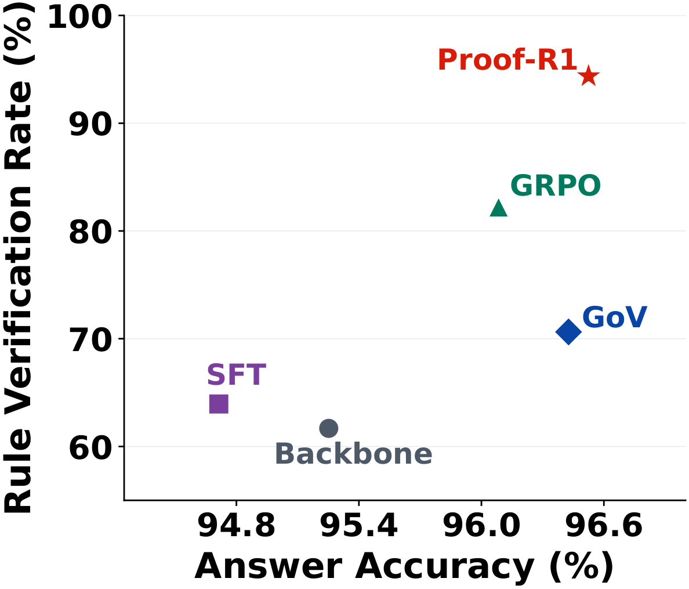

Verify each action
MCFV
Each action declares its dependencies, conclusion, and inference rule. An UNSAT check verifies semantic entailment; rule checks establish whether the declared inference is valid.
dependencies ∧ ¬conclusion → UNSAT
Reinforcement learning · Formal verification
Reinforcement Learning from Formal Verification
for Natural-Language Logical Reasoning
A correct answer is only the beginning.
Learn the proof that makes it trustworthy.
01 / The idea
Proof-R1 turns formal verification into part of proof construction: it determines which conclusions enter the verified state and which steps receive credit for the answer.
Large language models (LLMs) are increasingly deployed for natural-language logical reasoning, where the final answer is easy to check but the proof behind it is not. An intermediate conclusion should follow from its premises, and the resulting derivation should support the final answer. Existing methods lack machine-checkable verification of intermediate conclusions and answer-supporting proof dependencies, so they may assign credit to invalid or answer-irrelevant steps.
We propose Proof-R1, an RL framework from formal verification that trains LLMs to construct verifiable proofs for natural-language logical reasoning. A generated conclusion enters the verified proof state only when its reasoning action satisfies proof obligations through UNSAT-based formal verification. Proof-R1 recovers the answer-supporting dependency closure to align outcome credit with the proof dependencies. Experiments across three logical reasoning benchmarks and four backbone models demonstrate improved answer accuracy and reasoning-process verifiability.
Qwen3-8B · ProverQA
+5.08 points over PRoSFI
Qwen3-8B · ProverQA
+1.43 points over PRoSFI
Qwen2.5-7B · ProverQA Hard
76.88% vs. 65.83% (LogicAgent)
FVR and RVR measure eligible proof steps; Pass@3 measures problems answered correctly in at least one of three samples.
02 / The framework
Construct a proof state, trace the answer’s dependencies, and train on the actions that matter.

MCFV
Each action declares its dependencies, conclusion, and inference rule. An UNSAT check verifies semantic entailment; rule checks establish whether the declared inference is valid.
dependencies ∧ ¬conclusion → UNSAT
ASDC
Traverse backward from the final conclusion to recover its answer-supporting dependency closure. Valid but irrelevant branches receive no outcome credit.
answer → supporting proof subgraph
Verification-aligned optimization
Combine verification advantages with closure-masked outcome advantages. Align action-level credit to the tokens that generated that action, then optimize the policy.
action credit → aligned token spans
Why the proof matters
Alex is an engineer and not a manager. All engineers have access. A valid proof derives access from the engineer premise, with explicit dependencies and a justified rule.
Proof-R1 makes that distinction checkable at the level of individual reasoning actions.

03 / The evidence
Trained on ProverQA. Evaluated on ProverQA, FOLIO, and ProofWriter with four backbone models.


Overall split · Table 1 in the paper
| Method | Avg@3 ↑ | Pass@3 ↑ | FVR ↑ | RVR ↑ |
|---|---|---|---|---|
| Backbone | 44.79 | 68.43 | 67.64 | 18.91 |
| LogicAgent | 59.28 | 81.20 | 54.39 | 30.44 |
| GoV | 47.23 | 70.63 | 65.28 | 23.38 |
| SFT | 47.04 | 70.78 | 66.39 | 19.94 |
| GRPO | 47.28 | 76.36 | 68.09 | 12.50 |
| PRoSFI | 59.57 | 84.21 | 62.59 | 15.22 |
| Proof-R1 Ours | 62.80 | 87.08 | 70.17 | 41.19 |
| Method | Avg@3 ↑ | Pass@3 ↑ | FVR ↑ | RVR ↑ |
|---|---|---|---|---|
| Backbone | 95.25 | 98.83 | 81.82 | 61.68 |
| LogicAgent | 96.87 | 99.12 | 93.88 | 79.70 |
| GoV | 96.43 | 98.53 | 89.05 | 70.63 |
| SFT | 94.71 | 99.12 | 83.00 | 63.94 |
| GRPO | 96.08 | 99.27 | 94.22 | 82.23 |
| PRoSFI | 96.23 | 98.83 | 95.13 | 89.28 |
| Proof-R1 Ours | 96.52 | 99.27 | 96.56 | 94.36 |
Avg@3: average correctness across three samples. Pass@3: at least one correct answer in three samples. FVR / RVR: semantic / declared-rule verification pass rates over eligible proof steps. Bold marks the best value in each column.
Beyond the training dataset
On Qwen3-8B, Proof-R1 improves both answer accuracy and proof-step verification on FOLIO and ProofWriter, without training on either dataset.
Explore the full experiments| Dataset / Method | Avg@3 ↑ | RVR ↑ |
|---|---|---|
| FOLIO · Backbone | 88.89 | 38.87 |
| FOLIO · Proof-R1 | 90.85 | 59.70 |
| ProofWriter · Backbone | 80.89 | 51.78 |
| ProofWriter · Proof-R1 | 94.89 | 85.46 |
04 / Cite this work
If you find this work useful, please consider citing our paper.
@misc{zhang2026learningprove,
title={Learning to Prove, Not Just to Answer: Reinforcement Learning from Formal Verification for Natural-Language Logical Reasoning},
author={Qili Zhang and Qianren Mao and Hanze Cai and Kaiming Zhao and Yuening He and Xihan Lei and Yashuo Luo and Hanwen Hao and Yutong Gu and Likang Xiao and Zhijun Chen and Weifeng Jiang and Haoyi Zhou and Jianxin Li},
year={2026},
eprint={2609.37203},
archivePrefix={arXiv},
primaryClass={cs.AI},
url={https://arxiv.org/abs/2609.37203}
}